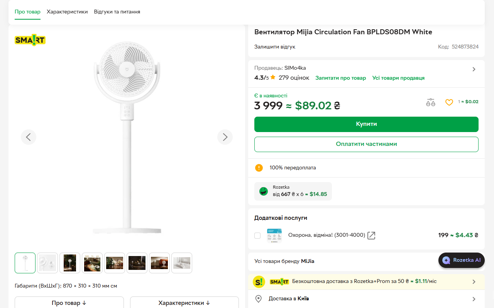

Añade Twinprice.
Instala la extensión gratuita desde Chrome Web Store o Firefox Add-ons.
UN POCO DE CLARIDAD PARA TU CARRITO
Twinprice es una extensión gratuita para convertir divisas en Chrome y Firefox. Ve los precios convertidos junto a los originales mientras compras, o resalta un precio y haz clic en «Convertir selección».
Instalación gratuita. Sin cuenta. Lee la guía de inicio.
HOGAR & DECORACIÓN
Un poco de luz. Un espacio de trabajo mejor.
UN PRECIO ES TODO LO QUE NECESITAS
Resalta un precio y haz clic en el botón azul Convertir selección que aparece debajo. El mismo botón se vuelve verde y muestra tu resultado.
Demostración animada · Tipo de ejemplo: 1 € = 1,10 $.
01 / PONTE CÓMODO
Configura tu divisa una vez.
Y haz menos cálculos mentales la próxima vez que navegues.
Instala la extensión gratuita desde Chrome Web Store o Firefox Add-ons.
Elige la divisa que conoces. Deja que AUTO detecte la original o selecciónala tú.
Abre una página de compras y convierte sus precios. Activa la conversión automática en los sitios que elijas.
02 / TU NAVEGADOR, UN POCO MEJOR
Todo el contexto que necesitas.
Justo al lado del precio que estás mirando.
Mantén juntos el precio original y su conversión. Oriéntate sin abrir una calculadora ni otra pestaña.
Activa la conversión automática en los sitios que elijas. Twinprice recuerda tu divisa de origen o el modo AUTO en cada uno.
Elige los colores y las formas de los precios convertidos, con vista previa en vivo. Mantén los originales al lado o muestra los precios convertidos en su lugar.
Resalta un precio con su divisa y haz clic en Convertir selección debajo. Obtén la conversión solo del precio que necesitas. También puedes convertir una página entera o escribir un importe en la extensión.

03 / CREADO PENSANDO EN LA PRIVACIDAD
Twinprice lee los precios donde están: en tu navegador. Tus páginas de compras no tienen que ir a ningún otro sitio.
Leer la política de privacidad completaLa detección de precios y los cambios en la página ocurren en tu dispositivo. El contenido de la página, los precios y las URL visitadas no se envían al proveedor de tipos de cambio.
Las solicitudes de tipos de cambio a Frankfurter incluyen códigos de divisa. Como en cualquier otra solicitud de internet, el servicio puede recibir datos de red como tu dirección IP.
El acceso a las páginas web permite a la extensión encontrar precios compatibles y ofrecer la conversión. Desactiva el conversor para detener el análisis, los avisos y la conversión automática.
04 / CONVIENE SABERLO
¿Tienes otra duda?
Obtén ayuda o informa de un problema.
Sigue la guía de uso paso a paso para convertir páginas y selecciones. Sus ejemplos de compras explican la conversión de euros a eslotis, los símbolos de dólar ambiguos y las diferencias al pagar.
Sí. Instalar y usar Twinprice es gratis y no requiere cuenta. La extensión es de código abierto y no incluye rastreadores publicitarios ni de analítica.
Twinprice está disponible para Chrome y Firefox. Busca divisas por nombre o código en la extensión. La conversión manual usa el catálogo de divisas activas de Frankfurter; la detección AUTO usa un conjunto más pequeño y seleccionado. Los pares de divisas disponibles dependen del proveedor de tipos de cambio.
Sí. Resalta un precio compatible, incluido su símbolo o código de divisa (por ejemplo, €89), y haz clic en el botón azul «Convertir selección» que aparece debajo. El botón se vuelve verde y muestra el resultado en tu divisa preferida. También puedes hacer clic derecho en el precio resaltado y elegir «Convert selected currency».
Funciona con texto de precios compatible en páginas web normales, incluidos muchos precios que se añaden mientras navegas. Los precios en imágenes, en marcos inaccesibles y en algunos diseños poco habituales no se pueden convertir. Las páginas de ajustes del navegador y las tiendas de extensiones están restringidas. Si la divisa de origen no está clara, elígela manualmente en la ventana emergente.
Twinprice usa los tipos de referencia de Frankfurter para comparar con comodidad. Tu banco, el emisor de tu tarjeta o tu servicio de pago pueden aplicar otro tipo de cambio y añadir comisiones. Si no hay tipos recientes disponibles, pueden usarse los guardados en caché; la extensión avisa a las 48 horas y no usa tipos con más de siete días. La demo de este sitio usa tipos de ejemplo fijos.
Sí. Elige «Restaurar los precios originales» en la ventana emergente después de convertir. En «Opciones de la página», desactiva «Convertir este sitio automáticamente» para olvidar los ajustes automáticos de ese sitio. Desactiva «Activar el conversor» para detener el análisis, los avisos y la conversión automática en todas partes.
MENOS CÁLCULO MENTAL. MÁS MIRAR ESCAPARATES.
Ponle un precio familiar a tu próximo hallazgo.
Instalación gratuita. Sin cuenta. Datos del producto y del editor.